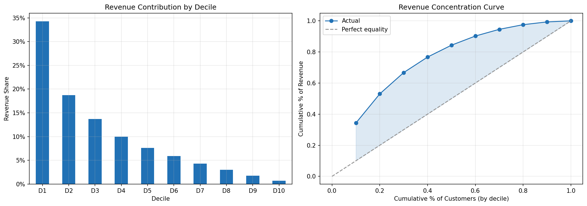
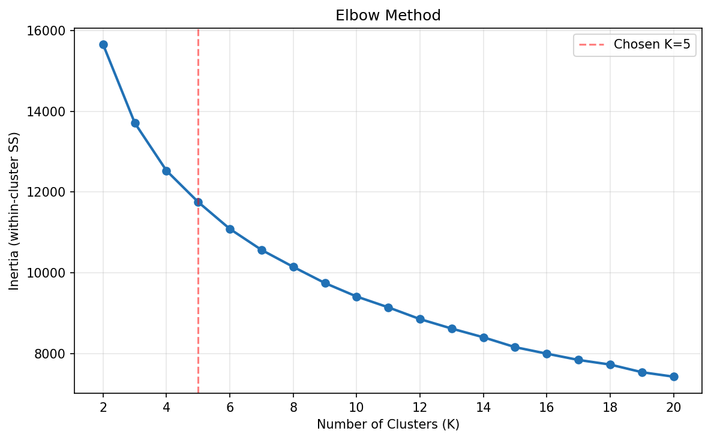

4.1 Segmentation client
À propos de la version française
Cette page est une traduction par IA de la version anglaise de Marketing Science in Python. La version anglaise fait foi et prévaut en cas de divergence. Le code, les notebooks et le texte intégré aux images restent en anglais. Lire la version anglaise
Un projet de segmentation doit produire quelque chose que votre équipe peut réellement utiliser, et pas seulement une présentation. Le véritable livrable est un segment_id directement exploitable dans votre CRM et vos plateformes publicitaires, accompagné d’une fiche synthétique pour chaque segment : qui sont ces clients, pourquoi ils comptent et quelles actions votre équipe doit entreprendre.
Ce chapitre explique comment construire ce type de livrable en trois étapes :
- D’abord, classer les clients selon leur valeur actuelle. L’analyse par déciles et la méthode RFM (récence, fréquence, montant) permettent de segmenter rapidement selon la valeur.
- Ensuite, regrouper les clients selon leur comportement. Le regroupement comportemental fait ressortir des tendances que les niveaux de valeur seuls ne peuvent pas saisir.
- Enfin, ajouter le sens des achats. La segmentation fondée sur les plongements vectoriels montre ce que les clients achètent réellement, et pas seulement combien ils dépensent.
Variables comportementales et variables de profil
Lorsqu’on construit des segments de clientèle, les variables se répartissent en deux grandes catégories. Les variables comportementales décrivent ce que font les clients : récence, fréquence, dépenses, catégories achetées, diversité des produits, retours et dépendance aux remises. Les variables de profil décrivent qui ils sont ou où vous pouvez les toucher : âge, revenu, composition du ménage, localisation géographique, niveau dans le programme de fidélité et préférence de canal.
Pour la segmentation marketing, les variables comportementales constituent une base plus solide. Ce qu’une personne a consulté ou acheté, ou ce que des clients similaires ont choisi, prédit généralement mieux sa prochaine action que les caractéristiques démographiques. S’appuyer uniquement sur ces dernières, par exemple « ce produit pour un homme d’une trentaine d’années » ou « cette offre pour une personne à revenu élevé », fournit un signal beaucoup plus faible que l’historique d’achats réel du client.
Les variables de profil ont néanmoins leur rôle. Utilisez-les après avoir construit les segments pour comprendre qui compose chaque groupe, où le toucher et comment adapter la communication.
Commencer simplement : déciles et RFM
L’approche la plus simple repose sur des règles : vous définissez les seuils au lieu de vous en remettre à un algorithme. L’analyse par déciles et la méthode RFM en sont les exemples les plus courants.
Analyse par déciles
L’analyse par déciles répartit les clients en dix groupes de même taille selon le chiffre d’affaires. La répartition suit souvent le principe de Pareto : un petit groupe génère l’essentiel du chiffre d’affaires. Le décile supérieur bénéficie d’actions de fidélisation et d’un traitement VIP. Les trois déciles suivants sont la cible principale des campagnes de développement. Les trois déciles intermédiaires reçoivent des communications automatisées peu coûteuses pour entretenir la relation, et les trois derniers sont exclus des offres coûteuses. Vous pouvez mettre cela en place rapidement et donner à votre équipe un plan d’action clair.

Analyse RFM
La méthode RFM offre une vision plus nuancée. C’est le cadre de segmentation le plus utilisé en marketing direct, car les équipes raisonnent déjà en ces termes : anciens gros acheteurs devenus inactifs, nouveaux acheteurs fréquents et autres profils similaires.
| Variable | Définition | Sens favorable |
|---|---|---|
| Récence (R) | Nombre de jours depuis le dernier achat du client | Plus faible = mieux |
| Fréquence (F) | Nombre d’achats pendant la période d’observation | Plus élevé = mieux |
| Montant (M) | Dépenses totales pendant la période d’observation | Plus élevé = mieux |
Le classement indépendant divise chaque variable en quintiles séparément, créant un score à trois chiffres (R=5, F=4, M=3) et jusqu’à 125 groupes. Le classement séquentiel imbrique les divisions : d’abord selon la récence, puis selon la fréquence au sein de chaque groupe de récence, puis selon le montant ; la récence reçoit donc le poids le plus important.
PyMC-Marketing, la bibliothèque utilisée pour la modélisation de la CLV dans la section 4.2, fournit un utilitaire rfm_segments() fondé sur les quartiles, qui attribue des scores R, F et M ainsi que des segments nommés directement à partir d’une table de transactions. Il est moins souple que K-Means, mais fonctionne bien en pratique et reste rapide sur de très grandes bases de clientèle.
Les déciles et la méthode RFM sont rapides à mettre en place et faciles à utiliser. Mais ils ne créent que des niveaux de valeur, pas des profils clients complets. Deux clients ayant des scores RFM similaires peuvent se comporter très différemment : l’un peut acheter des articles au prix fort dans de nombreuses catégories, tandis que l’autre n’achète que des articles remisés dans une seule catégorie. Pour voir ces différences, il faut passer des niveaux de valeur à des variables comportementales plus riches.
Regroupement comportemental avec K-Means
K-Means est un algorithme classique de regroupement qui reste efficace pour la segmentation marketing. Standardisez les variables avec StandardScaler pour que les dépenses ne dominent pas, et commencez avec 6 à 10 variables comportementales. Au-delà de RFM, le montant moyen des commandes, la taille du panier et le taux de retour sont des ajouts utiles.
Appliquez une transformation logarithmique aux variables asymétriques avant la mise à l’échelle. Les dépenses, la fréquence, la récence et la taille du panier présentent généralement une forte asymétrie à droite : une poignée de clients achètent beaucoup plus que tous les autres. StandardScaler ne fait que centrer et remettre à l’échelle, de sorte que ces longues queues de distribution subsistent. Alimenté par les valeurs brutes, K-Means consacre ses premières divisions à séparer les gros acheteurs des petits et retrouve essentiellement des niveaux de valeur ; tout groupe supplémentaire qu’il découvre est une minuscule poche de valeurs atypiques, trop petite pour justifier une action. Appliquer log1p aux variables asymétriques (règle simple : transformer toute variable dont le coefficient d’asymétrie dépasse environ 1) comprime les queues de distribution. Les groupes reflètent alors la forme des comportements plutôt que le niveau des dépenses, et des segments équilibrés, utilisables pour agir, émergent. Sur le jeu de données du notebook associé, c’est ce qui fait la différence entre un K-Means qui se réduit à trois niveaux de valeur et un K-Means qui répartit la clientèle en cinq groupes comportementaux équilibrés, de tailles comparables.
Choisir K relève à la fois des statistiques et du jugement. La méthode du coude aide à resserrer la plage de valeurs, mais fixe rarement le nombre. Sur les données clients, le coude le plus marqué se situe souvent à K=3, ce qui ne fait généralement que retrouver des niveaux de valeur (gros acheteurs, acheteurs moyens, clients inactifs) que les déciles et RFM saisissent déjà. Pour segmenter selon le comportement plutôt que la valeur, explorez la plage utile en pratique (souvent 4 à 8 segments) et laissez les possibilités d’action trancher : retenez le K dont les segments seraient réellement traités différemment par votre équipe marketing. Si elle ne peut pas décrire une action distincte pour chaque segment, vous en avez trop.

Sur le jeu de données du notebook associé, K=5 est le point où les segments cessent d’être des niveaux de valeur et deviennent des fiches d’action. Table 2 présente ce résultat. Les proportions et les moyennes des profils proviennent du notebook (les dépenses, les visites et les rayons sont des totaux sur deux ans, moyennés au sein du segment) ; les noms et les deux dernières actions sont l’interprétation par l’analyste de la carte thermique des profils, étape que le notebook vous laisse réaliser.
| Segment | Proportion | Profil | Action |
|---|---|---|---|
| Gros acheteurs fidèles | 25% | $7,300 de dépenses, 209 visites, 17 rayons | Fidélisation VIP |
| Petits paniers fréquents | 23% | $3,228 de dépenses, 157 visites, commandes de $24 | Accroître le panier |
| Gros paniers occasionnels | 22% | $1,938 de dépenses, 56 visites, commandes de $38 | Entretenir la relation à faible coût |
| Amateurs de remises | 19% | $1,087 de dépenses, 19% de part de remises, assortiment restreint | Offres uniquement avec des garde-fous sur la marge |
| Clients inactifs | 11% | $334 de dépenses, dernier achat il y a 17 semaines | Une seule relance peu coûteuse, puis arrêt |
Les noms sont des raccourcis ; chaque ligne constitue la fiche d’action. C’est ce tableau qu’il faut remettre à l’équipe marketing pour vérifier les possibilités d’action décrites ci-dessous : si deux lignes recevraient la même campagne, fusionnez-les.
Le regroupement numérique gomme encore le sens des produits. Avec des variables d’entrée comme la fréquence, les dépenses, la récence, la diversité des catégories et la dépendance aux remises, deux clients peuvent sembler similaires même si les produits qu’ils achètent sont très différents. Pour saisir ce sens, intégrez directement le texte des produits dans la segmentation.
Segmentation fondée sur les plongements vectoriels avec BERTopic
Pour saisir ce que les clients achètent réellement, traitez l’historique d’achats de chaque client comme du texte : concaténez les descriptions des produits achetés en une seule chaîne de caractères (le document client), puis utilisez un modèle de plongement vectoriel pour convertir cette chaîne en un vecteur dense. Dans cet espace vectoriel, les bougies d’anniversaire et les assiettes de fête sont proches, tandis qu’une théière ancienne est éloignée. Le regroupement des vecteurs sépare donc les clients selon le sens de leurs achats, et pas seulement selon leur volume d’achats.
Les exemples utilisent le jeu de données UCI Online Retail II, qui contient environ un million de transactions d’un détaillant britannique d’articles cadeaux, dont les descriptions de produits en texte libre sont précisément ce que lit un modèle de plongement vectoriel. Nous exécutons toute la chaîne de traitement avec BERTopic.

Pourquoi BERTopic ?
Construire cette chaîne à la main revient à enchaîner quatre bibliothèques : SentenceTransformers pour vectoriser les documents, UMAP pour réduire les dimensions, HDBSCAN pour former les groupes, et du code personnalisé pour lire le résultat. BERTopic réunit les quatre derrière une seule API et ajoute les éléments qui rendent la sortie exploitable : c-TF-IDF pour extraire les mots-clés distinctifs de chaque segment, reduce_outliers() pour les clients que HDBSCAN laisse sans affectation, transform() pour attribuer un segment à de nouveaux clients sans réajuster le modèle, et une étape facultative utilisant un LLM pour nommer les segments. Le reste de cette section suit cette chaîne de traitement.
Construire le document client
Par exemple, le document d’un client pourrait ressembler à ceci :
red retrospot cake stand, party bunting, paper cups, birthday candles, cake cases
Un modèle numérique peut ne voir dans ce client qu’un acheteur fréquent ou un gros acheteur. Le modèle de plongement vectoriel saisit le sens des produits : articles de fête et achats liés aux célébrations.
Pour construire un document, on regroupe et concatène les éléments du journal des transactions :
# Keep each customer's top-N products by revenue, then join the descriptions
prod_rev = (
df.groupby(["CustomerID", "Description"])["Revenue"].sum()
.reset_index()
.sort_values(["CustomerID", "Revenue"], ascending=[True, False])
)
top_products = prod_rev.groupby("CustomerID").head(TOP_N)
customer_docs = (
top_products.groupby("CustomerID")["Description"]
.apply(lambda d: ", ".join(d))
.reset_index(name="doc")
)Trois décisions pratiques déterminent la qualité des segments plus que tout le reste.
Quels produits inclure. Les N articles les plus achetés (selon la fréquence ou le chiffre d’affaires) donnent généralement de meilleurs résultats que l’historique d’achats complet. La liste complète ajoute du bruit provenant des achats ponctuels ; les articles principaux captent les habitudes réelles du client.
Faut-il pondérer par le chiffre d’affaires ? Inclure une fois un article de forte valeur et une fois un article de faible valeur peut donner une image trompeuse de ce qui compte pour le client. La pondération par le chiffre d’affaires (répéter les mentions des produits proportionnellement aux dépenses) précise les segments pour les clients aux paniers mixtes. Plafonnez les poids ou utilisez une pondération par le logarithme des dépenses lorsque les écarts de prix entre produits sont importants ; sinon, un seul achat de luxe peut dominer le document.
Filtrer les produits génériques. Les articles comme « Carte cadeau », « Frais de port » ou les références produit génériques sont du bruit : ils apparaissent dans tous les segments et diluent les mots-clés. Filtrez-les à l’aide de motifs dans StockCode ou maintenez une courte liste d’exclusion. Cette seule étape fait souvent la différence entre des segments qui ont un sens et des segments qui n’en ont aucun.
Un modèle léger de plongement vectoriel de phrases suffit pour la plupart des catalogues de vente au détail. La qualité de vos segments dépend beaucoup plus de la façon dont vous concevez et validez le document client que du modèle de plongement vectoriel choisi. Le notebook utilise un modèle SentenceTransformers local pour assurer la reproductibilité, mais le même processus peut aussi utiliser des modèles de plongement vectoriel accessibles par API, comme ceux d’OpenAI.
Lire les résultats
L’ajustement à l’origine de cette carte tient en un seul appel. Un modèle de plongement vectoriel local convertit chaque document en vecteur, et BERTopic se charge du regroupement et de l’extraction des mots-clés :
from bertopic import BERTopic
from sentence_transformers import SentenceTransformer
embedding_model = SentenceTransformer("all-MiniLM-L6-v2") # local, lightweight
embeddings = embedding_model.encode(customer_docs["doc"].tolist())
topic_model = BERTopic(embedding_model=embedding_model)
topics, probs = topic_model.fit_transform(
customer_docs["doc"].tolist(), embeddings=embeddings
)Le notebook associé configure explicitement les sous-modèles UMAP, HDBSCAN et c-TF-IDF ; il s’agit ici de la même chaîne de traitement avec les paramètres par défaut. Le résultat est une signature de mots-clés pour chaque segment :

Remettez ces graphiques à un spécialiste du marketing : il devrait rapidement voir quelles catégories, quelles campagnes et quelles créations publicitaires conviennent à chaque groupe.
Lorsqu’un thème domine
Les catalogues réels présentent souvent un thème large couvrant la plupart des clients et, en périphérie, une série de niches bien définies. HDBSCAN fait ressortir les deux, mais après la réduction des valeurs atypiques, le thème large enfle jusqu’à devenir un seul méga-thème, trop vaste pour être traité comme un segment unique. La correction est ciblée : appliquez K-Means uniquement aux plongements vectoriels du méga-thème et divisez-le en sous-segments de taille adaptée aux campagnes, tout en conservant les petits thèmes de niche comme résultats exploratoires. Cela applique le principe « HDBSCAN pour la découverte, K-Means pour les opérations » à l’intérieur du groupe dominant, et non à l’ensemble de la clientèle. Le notebook associé le fait automatiquement dès qu’un thème dépasse 50% de la clientèle.
Le piège des noms donnés par un LLM
Nommer les segments avec l’aide d’un LLM peut les rendre plus crédibles qu’ils ne le sont réellement. Donnez n’importe quel groupe à un LLM, même un groupe aléatoire, et demandez-lui un nom et un persona : vous obtiendrez une description soignée et convaincante. Le récit paraît plausible, que le groupe ait un sens ou non.
Deux garde-fous :
- Validez les éléments fournis par les mots-clés avant de lire le récit du LLM. Si vous ne pouvez pas vous-même discerner un thème clair dans les principaux mots-clés, le nom proposé par le LLM est une fiction.
- Testez le nom auprès de l’équipe marketing. Si elle rédigerait le même brief de campagne pour deux segments portant des noms différents, les noms sont décoratifs, pas informatifs.
Notebooks associés : le code complet et fonctionnel est réparti entre deux notebooks, chacun utilisant le jeu de données adapté à sa méthode.
sec4.1_traditional_segmentation.ipynb: déciles, RFM et K-Means sur le jeu de données Dunnhumby « The Complete Journey », également utilisé dans le chapitre sur la CLV, ce qui permet de conserver l’appartenance aux segments d’un chapitre à l’autre. Voir sur GitHubsec4.1_semantic_segmentation.ipynb: la chaîne de traitement par plongements vectoriels (construction des documents clients, filtrage des produits génériques, plongement vectoriel, regroupement BERTopic, extraction des mots-clés et attribution de noms assistée par LLM) sur le jeu de données UCI Online Retail II, qui possède les descriptions de produits riches dont cette méthode a besoin. L’étape facultative d’attribution de noms par LLM est actuellement configurée pour Anthropic et nécessite le paquetlitellmainsi qu’uneANTHROPIC_API_KEY; sans cette clé, la cellule est ignorée et le reste s’exécute quand même. Voir sur GitHub
Votre segmentation est-elle de bonne qualité ?
Trois vérifications, par ordre de priorité.
La possibilité d’agir est ce qui compte le plus. Présentez les profils des segments à votre équipe marketing. Pour chaque paire de segments, demandez : « Utiliseriez-vous un message, un canal, une offre ou une fréquence différents ? » Si la réponse est « Je ferais la même chose pour les deux », la segmentation ne permet pas d’actions distinctes, aussi rigoureuses que paraissent les mathématiques. Le responsable habituel est un segment moyen sur tous les critères ; fusionnez-le avec un segment voisin ou revoyez votre sélection de variables.
La stabilité. Relancez le regroupement sur deux périodes sans chevauchement et vérifiez que les clients se retrouvent majoritairement dans les mêmes segments. L’indice de Rand ajusté (ARI) quantifie cette stabilité ; si trop de clients changent de segment entre les périodes, vous ne pouvez pas vous appuyer sur ces segments pour vos campagnes. Les notebooks associés présentent les deux vérifications : le calcul de l’ARI dans le notebook sémantique et une matrice de migration dans le notebook traditionnel.
Sur les données d’achats alimentaires, la matrice de migration classe les clients par quintile de chiffre d’affaires chaque année au lieu de les regrouper à nouveau : 70% du quintile supérieur et 61% du quintile inférieur restent en place d’une année à l’autre, tandis que les trois quintiles intermédiaires ne conservent qu’environ 40% de leurs clients. C’est au milieu de la clientèle que les affectations aux segments sont les moins fiables ; c’est donc là qu’une campagne fondée sur ces affectations doit prévoir le plus de souplesse.

La taille. Chaque segment doit être assez grand pour permettre une action, mais le minimum approprié dépend de l’entreprise et de la campagne : il n’existe pas de seuil universel. À titre indicatif, évitez les segments si petits que vous ne pouvez pas y mener une campagne utile ; pour un ciblage large, cela signifie souvent environ 10 pour cent de la clientèle, tandis qu’une niche réellement à forte valeur peut constituer une exception délibérée. En pratique, une poignée de segments, souvent 4 à 8, suffit.
Les segments sont construits à partir de différences comportementales, mais les campagnes qui leur sont affectées doivent tout de même être testées. Reportez-vous à la conception des tests A/B avant de crier victoire.
Aide-mémoire des méthodes
| Question | Méthode | Entrée | Sortie |
|---|---|---|---|
| Quels clients méritent davantage d’attention maintenant ? | Déciles / RFM | Journal des transactions | Niveaux de valeur ou scores R/F/M |
| Quels comportements existent au-delà des niveaux de valeur ? | K-Means | Variables comportementales numériques | Étiquettes de segments comportementaux |
| Qu’achètent réellement les clients ? | Regroupement fondé sur les plongements vectoriels | Documents clients issus des descriptions de produits | Segments fondés sur le sens des achats, avec signatures de mots-clés |
Points clés à retenir
- Construisez les segments à partir des comportements, puis ajoutez les caractéristiques démographiques pour décrire et toucher chaque groupe. Le livrable est un
segment_idque votre CRM et vos plateformes publicitaires peuvent utiliser, pas un diaporama. - Validez d’abord les possibilités d’action, puis la stabilité et la taille. Si deux segments recevraient la même campagne, fusionnez-les.
- Un nom de segment convaincant n’est pas une preuve. Un LLM en produira un pour n’importe quel groupe, y compris un groupe aléatoire ; lisez donc vous-même les principaux mots-clés avant de vous fier à l’étiquette.